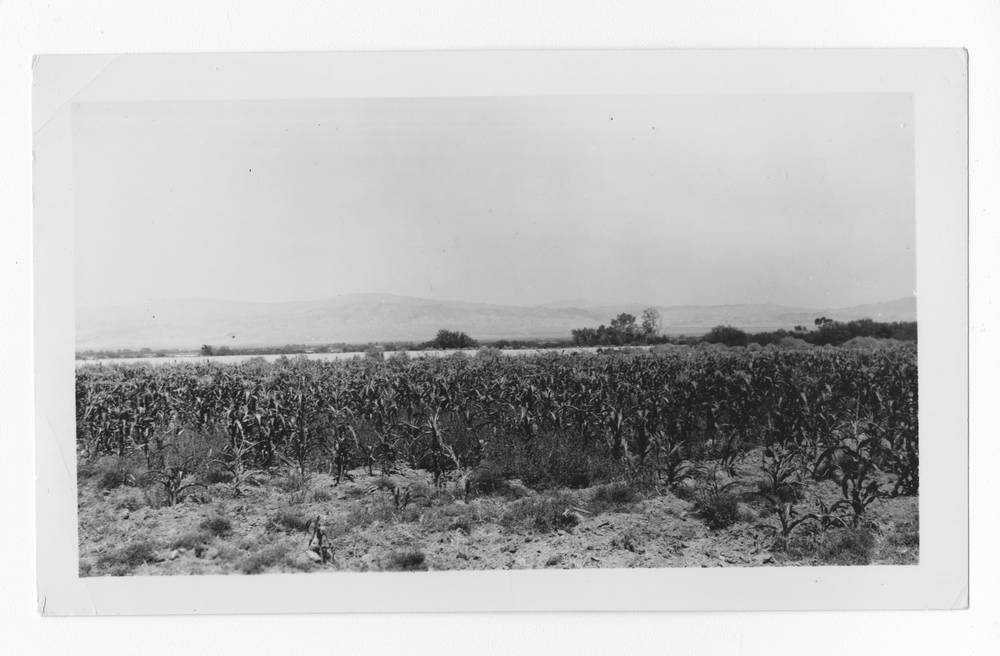

미국 캘리포니아 소보바 원주민 부족 소방서, 태양광 마이크로그리드에 바나듐 흐름전지 더해 정전 때 10시간 이상 버틴다

GRID 얼터너티브가 주 에너지위원회 지원으로 개발…산불 최고위험지역, 24시간 넘는 정전도 겪어
미국 캘리포니아주 샌재신토 인근 루이세뇨 인디언 소보바 부족(Soboba Band of Luiseño Indians)의 소방서 태양광 마이크로그리드에 바나듐 흐름전지가 더해져, 정전이나 전력회사의 산불 예방 단전 때에도 최소 10시간 동안 전기를 공급할 수 있게 됐다. 사업은 GRID 얼터너티브(GRID Alternatives)가 캘리포니아 에너지위원회(CEC) 지원을 받아 개발했으며, 지난주 부족 대표와 전지 제조사 인비니티(Invinity)가 함께한 인계식으로 마무리됐다. 소보바 보호구역은 주의 산불 위험 최고 등급(3등급) 지역으로, 정전이 되풀이되고 일부는 24시간 넘게 이어졌다. 큰 재난 때 이 소방서는 긴급 대응 시설이자 현장 지휘소, 주민 지원 거점 역할을 한다. 흐름전지는 액체 전해질을 탱크에 담아 에너지를 저장하는 방식으로 불에 타지 않는 전해질을 써 열폭주 위험이 리튬이온 전지와 다르며, 이번 설비는 리튬이온에 기대지 않는 장시간 저장 기술을 보여 주려는 주 정부 시범 사업의 하나로 시설 전기요금도 낮출 것으로 기대된다.
시민에너지 관점
24시간 넘는 정전을 겪는 산불 최고위험지역에서 소방서가 태양광과 10시간 이상 저장 설비로 스스로 버틸 힘을 갖췄다는 점이 핵심이다. 큰 전력회사의 송전망이 끊기면 외진 마을부터 고립되는데, 지역 안에서 만들고 저장하는 전기는 그때 마지막 안전망이 된다. 공동체가 주인인 설비는 요금을 낮추는 데서 그치지 않고 재난 때 주민의 생명을 지키는 공공 자산이 된다. 우리도 섬·산간 마을 주민센터와 소방·보건 시설부터 지역이 함께 소유하는 태양광과 저장 설비를 갖추도록 지원 사업을 짜야 한다.
출처: Microgrid Knowledge 2026-11-10 기자 미표기 원문 보기
米カリフォルニアのソボバ先住民部族の消防署、太陽光マイクログリッドにバナジウムフロー電池を追加し停電時も10時間以上持ちこたえる
GRIDオルタナティブズが州エネルギー委員会の支援で開発…山火事の最高危険地域、24時間を超える停電も経験
米カリフォルニア州サンジャシント近郊のルイセーニョ・インディアン・ソボバ部族（Soboba Band of Luiseño Indians）の消防署の太陽光マイクログリッドにバナジウムフロー電池が加わり、停電や電力会社による山火事予防の計画停電の際にも最低10時間電気を供給できるようになった。事業はGRIDオルタナティブズ（GRID Alternatives）がカリフォルニア州エネルギー委員会（CEC）の支援を受けて開発し、先週、部族の代表と電池メーカーのインビニティ（Invinity）が参加した引き渡し式で完了した。ソボバ居留地は州の山火事危険度で最高ランク（ティア3）の地域にあり、停電が繰り返され、一部は24時間以上続いた。大規模な災害時、この消防署は緊急対応施設であり、現場指揮所、住民支援の拠点の役割を果たす。フロー電池は液体の電解液をタンクにためてエネルギーを蓄える方式で、燃えない電解液を使うため熱暴走のリスクがリチウムイオン電池とは異なり、今回の設備はリチウムイオンに頼らない長時間蓄電技術を示す州の実証事業の一つとして、施設の電気料金の削減も見込まれている。
市民エネルギーの視点
24時間を超える停電に見舞われる山火事の最高危険地域で、消防署が太陽光と10時間以上の蓄電設備によって自力で持ちこたえる力を備えたことが要点だ。大手電力会社の送電網が途切れると、まず辺地の集落が孤立するが、地域の中でつくり蓄える電気はそのとき最後の安全網になる。地域社会が所有する設備は料金を下げるだけでなく、災害時に住民の命を守る公共の資産になる。韓国でも島や山間の集落の住民センター、消防・保健施設から、地域が共同で所有する太陽光と蓄電設備を備えられるよう支援事業を組むべきだ。
出典: Microgrid Knowledge 2026-11-10 기자 미표기 原文を読む
美国加州索博巴原住民部落消防站在光伏微电网中加装钒液流电池，停电时可支撑10小时以上
GRID Alternatives在州能源委员会支持下开发…位于山火最高风险区，曾经历超过24小时的停电
美国加利福尼亚州圣哈辛托附近的卢伊塞尼奥印第安人索博巴部落（Soboba Band of Luiseño Indians）消防站，在其光伏微电网中加装了钒液流电池，在停电或电力公司为防山火而实施的计划断电期间，也能至少供电10小时。该项目由GRID Alternatives在加州能源委员会（CEC）支持下开发，上周在部落代表和电池制造商Invinity出席的移交仪式上完工。索博巴保留地位于加州山火风险最高等级（第3级）地区，停电反复发生，部分停电持续超过24小时。在重大灾害中，这座消防站既是应急响应设施，也是现场指挥所和居民援助据点。液流电池将液态电解液储存在罐中来储能，由于使用不可燃电解液，其热失控风险与锂离子电池不同；这套设备是加州展示不依赖锂离子的长时储能技术的示范项目之一，预计还能降低设施电费。
市民能源视角
在经历过超过24小时停电的山火最高风险地区，消防站凭借光伏和10小时以上的储能设备具备了自我支撑的能力，这是关键所在。大型电力公司的输电网一旦中断，偏远村落首先陷入孤立，而在本地生产和储存的电力此时就成为最后的安全网。由社区拥有的设备不仅能降低电费，还会成为灾害时守护居民生命的公共资产。韩国也应设计支持项目，从海岛和山区村落的居民中心以及消防、卫生设施做起，配备由地方共同拥有的光伏和储能设备。
来源: Microgrid Knowledge 2026-11-10 기자 미표기 查看原文
Soboba Tribal Fire Station in California Adds a Vanadium Flow Battery to Its Solar Microgrid to Ride Out Outages for 10-Plus Hours
Developed by GRID Alternatives with state Energy Commission support in an extreme fire-threat zone that has seen outages of more than 24 hours
The solar microgrid at the fire station of the Soboba Band of Luiseño Indians, near San Jacinto, California, now includes a vanadium flow battery that can supply at least 10 hours of power during grid outages and utility Public Safety Power Shutoffs. The project was developed by GRID Alternatives with funding support from the California Energy Commission (CEC) and was completed last week with a handover ceremony attended by tribal representatives and battery maker Invinity. The Soboba reservation lies in a Tier 3 Extreme High Fire Threat Zone and has suffered repeated outages, some lasting more than 24 hours. In major incidents the fire station serves as an emergency response facility, incident command centre and community resource. Flow batteries store energy in tanks of liquid electrolyte that does not burn, giving them a different thermal-runaway risk from lithium-ion cells, and the system is part of a state effort to demonstrate long-duration storage that does not rely on lithium-ion, while also expected to cut the facility's energy costs.
Citizen Energy View
What matters is that a fire station in an extreme fire-threat zone that has faced outages of more than 24 hours can now hold out on its own with solar and more than 10 hours of storage. When a big utility's lines go down, remote communities are cut off first, and power made and stored locally becomes the last safety net. Community-owned equipment does more than lower bills; it becomes a public asset that protects lives in a disaster. Korea should design support programmes so that community centres, fire stations and health posts in island and mountain villages are the first to gain locally owned solar and storage.
Source: Microgrid Knowledge 2026-11-10 기자 미표기 Read the original